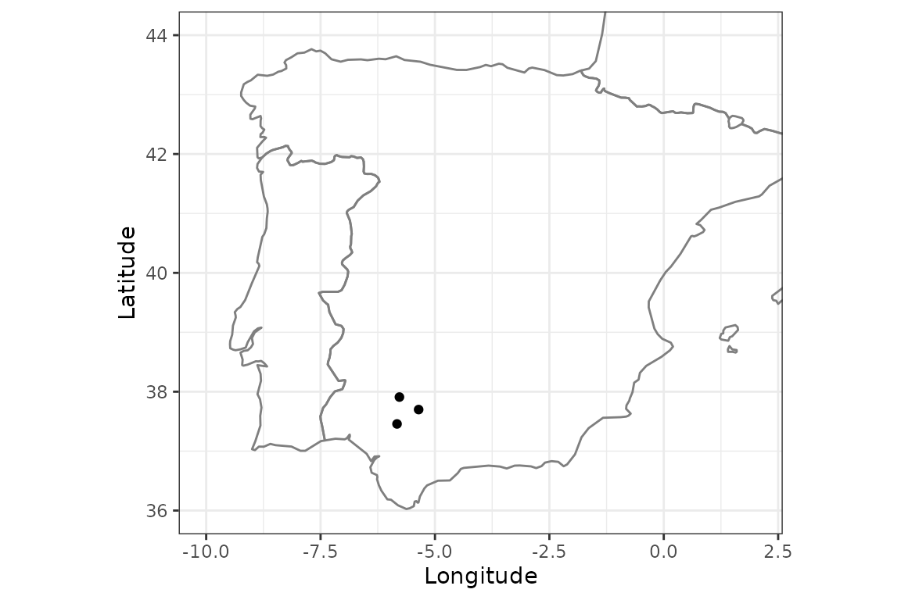
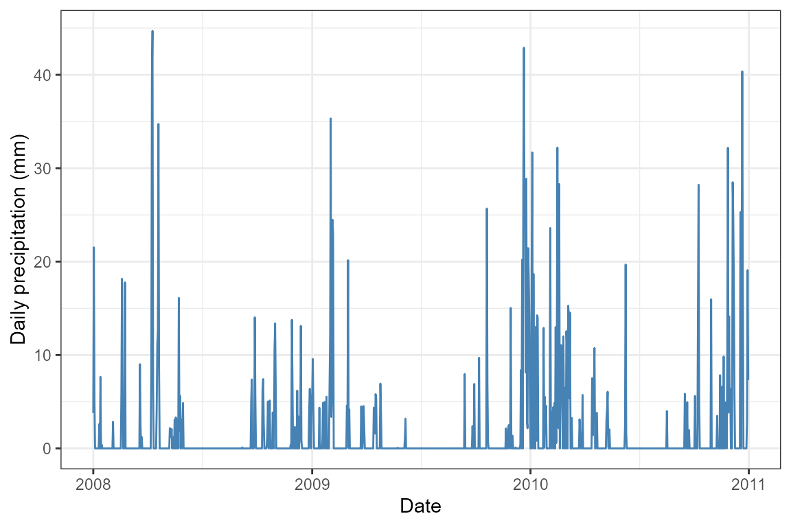
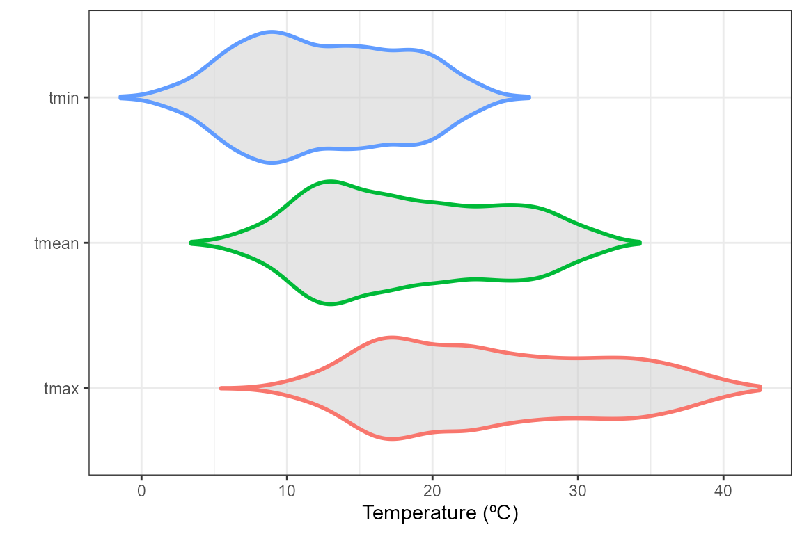
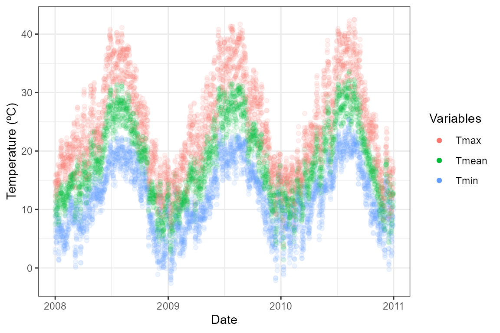
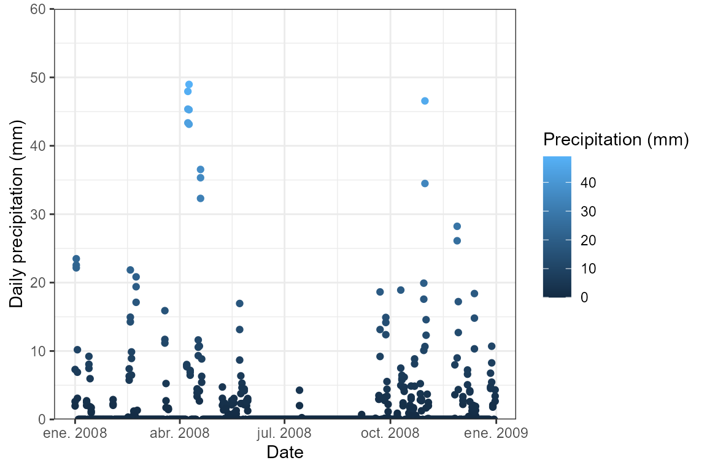
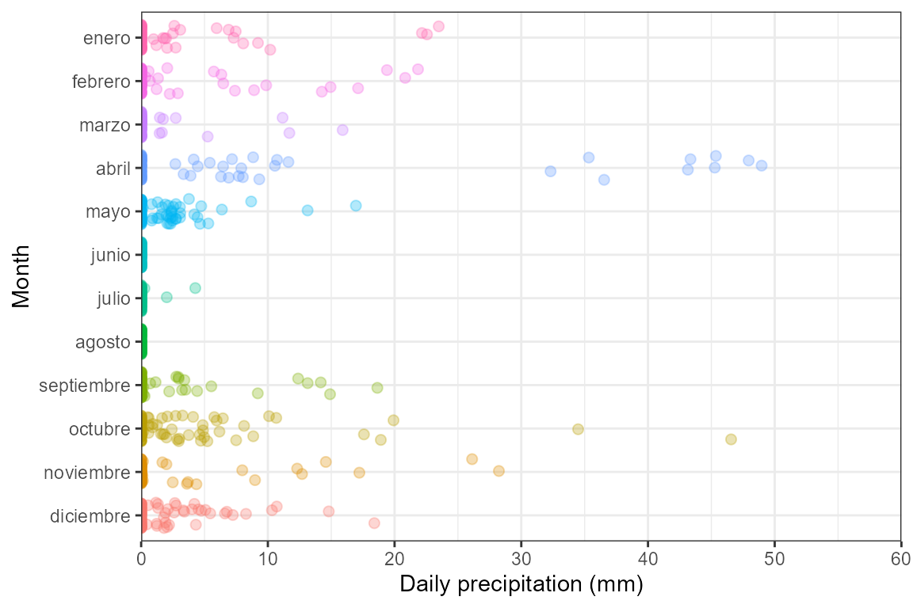
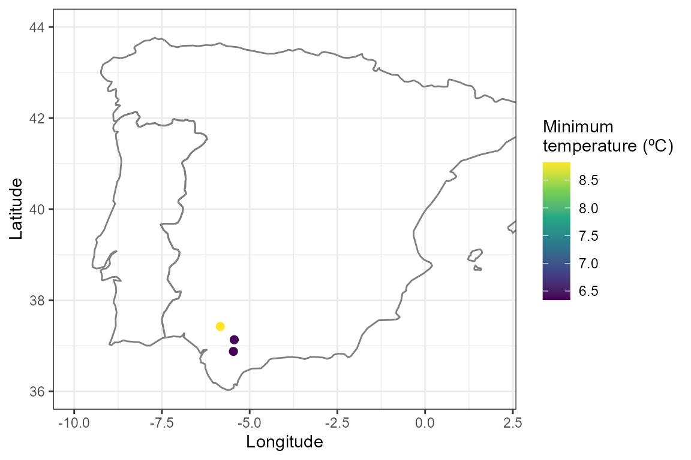

vignettes/points-df-mat-sf.Rmd
points-df-mat-sf.RmdWith easyclimate you can easily download daily climate data for a given set of points or polygons within Europe. To download and install the latest version of easyclimate from github follow the instructions in https://github.com/VeruGHub/easyclimate
In this tutorial we will work through the basics of using easyclimate with coordinate points. You can enter coordinates as a data.frame, matrix, or sf object. At the end we will have a data frame with climate variables for each point.
First, specify longitude and latitude coordinates in a data frame with the column names lon and lat. Here we are simulating coordinates for three random sites in southern Spain
library(easyclimate)
library(ggplot2)
library(dplyr)
coords <- data.frame(
lon = rnorm(3, mean = -5.36, sd = 0.3),
lat = rnorm(3, mean = 37.40, sd = 0.3)
)
ggplot() +
borders(regions = c("Spain", "Portugal", "France")) +
geom_point(data = coords, aes(x = lon, y = lat)) +
coord_fixed(xlim = c(-10, 2), ylim = c(36, 44), ratio = 1.3) +
xlab("Longitude") +
ylab("Latitude") +
theme_bw()
Now, download the climatic data for the selected locations. It is very simple, all you have to do is use the function get_daily_climate, specify the period (e.g. 2008-05-25 for a single day or 2008:2010 for several years), and the variables to be downloaded (precipitation Prcp, minimum temperature Tmin or maximum temperature Tmax).
Sys.time() # to know how much it takes to download
## [1] "2021-07-07 18:20:51 CEST"
df_prcp <- get_daily_climate(
coords = coords,
period = 2008:2010,
climatic_var = "Prcp"
)
df_tmin <- get_daily_climate(
coords = coords,
period = 2008:2010,
climatic_var = "Tmin"
)
df_tmax <- get_daily_climate(
coords = coords,
period = 2008:2010,
climatic_var = "Tmax"
)
Sys.time()
## [1] "2021-07-07 18:23:25 CEST"
head(df_prcp[, c("lon", "lat", "date", "Prcp")])
## lon lat date Prcp
## 1 -5.429536 36.98474 2008-01-01 227
## 2 -5.429536 36.98474 2008-01-02 2328
## 3 -5.429536 36.98474 2008-01-03 925
## 4 -5.429536 36.98474 2008-01-04 0
## 5 -5.429536 36.98474 2008-01-05 0
## 6 -5.429536 36.98474 2008-01-06 0Temperature and precipitation units are ºC*100 and mm*100, respectively, to avoid floating values. You can change the units using the mutate function and join all the variables in a data frame.
prcp_date <- df_prcp %>%
mutate(prcp = Prcp / 100) %>%
select(ID_coords, lon, lat, date, prcp)
tmin_date <- df_tmin %>%
mutate(tmin = Tmin / 100) %>%
select(ID_coords, date, tmin)
tmax_date <- df_tmax %>%
mutate(tmax = Tmax / 100) %>%
select(ID_coords, date, tmax)
clim_join <- full_join(prcp_date, tmin_date, by = c("ID_coords", "date")) %>%
full_join(tmax_date, by = c("ID_coords", "date")) %>%
mutate(
date = as.Date(date),
month = months(date),
year = format(date, format = "%y")
) %>%
select(ID_coords, lon, lat, date, year, month, prcp, tmin, tmax)
kable(head(clim_join))| ID_coords | lon | lat | date | year | month | prcp | tmin | tmax |
|---|---|---|---|---|---|---|---|---|
| 1 | -5.429536 | 36.98474 | 2008-01-01 | 08 | enero | 2.27 | 3.84 | 14.87 |
| 1 | -5.429536 | 36.98474 | 2008-01-02 | 08 | enero | 23.28 | 7.57 | 15.03 |
| 1 | -5.429536 | 36.98474 | 2008-01-03 | 08 | enero | 9.25 | 6.31 | 14.85 |
| 1 | -5.429536 | 36.98474 | 2008-01-04 | 08 | enero | 0.00 | 5.40 | 13.24 |
| 1 | -5.429536 | 36.98474 | 2008-01-05 | 08 | enero | 0.00 | 5.21 | 14.86 |
| 1 | -5.429536 | 36.98474 | 2008-01-06 | 08 | enero | 0.00 | 8.64 | 16.01 |
Finally, you can visualize the daily climate results. For example, let’s plot the precipitation for one of the sites:
clim_site1 <- clim_join %>%
filter(ID_coords == 1)
ggplot(clim_site1) +
geom_line(aes(x = date, y = prcp), colour = "steelblue") +
labs(x = "Date", y = "Daily precipitation (mm)") +
theme_bw()
Or calculate the daily mean temperature and plot it against tmin and tmax:
library(tidyr)
clim_df <- clim_join %>%
mutate(tmean = (tmin + tmax) / 2) %>%
pivot_longer(
cols = c("tmin", "tmax", "tmean"),
names_to = "temp_vars",
values_to = "temp_values")
ggplot(clim_df, aes(x = temp_vars, y = temp_values, color = temp_vars)) +
geom_violin(fill = "gray80", size = 1, alpha = .5, show.legend = FALSE) +
coord_flip() +
ylab("Temperature (ºC)") + xlab("") +
theme_bw()
ggplot(clim_df, aes(x = date, y = temp_values, color = temp_vars)) +
geom_point(alpha = .1) +
scale_color_discrete(name = "Variables",
guide = guide_legend(override.aes = list(alpha = 1))) +
ylab("Temperature (ºC)") + xlab("Date") +
theme_bw()
easyclimate handles different input data, try now with matrices!
Here we are retrieving daily precipitation data for a single year (2008).
coords_mat <- as.matrix(coords)
Sys.time()
## [1] "2021-07-13 09:20:41 CEST"
mat_prcp <- get_daily_climate(
coords = coords_mat,
period = 2008, # single year
climatic_var = "Prcp"
)
Sys.time()
## [1] "2021-07-13 09:20:55 CEST"
head(mat_prcp)
## ID_coords x y date Prcp
## 1 1 -5.429536 36.98474 2008-01-01 227
## 2 1 -5.429536 36.98474 2008-01-02 2328
## 3 1 -5.429536 36.98474 2008-01-03 925
## 4 1 -5.429536 36.98474 2008-01-04 0
## 5 1 -5.429536 36.98474 2008-01-05 0
## 6 1 -5.429536 36.98474 2008-01-06 0
clim_mat <- mat_prcp %>%
mutate(
prcp = Prcp / 100,
date = as.Date(date),
month = months(date),
year = format(date, format = "%y")
) %>%
relocate(x, y, date, year, month, prcp)
ggplot(clim_mat, aes(x = date, y = prcp, color = prcp)) +
geom_point() +
scale_color_continuous(name = "Precipitation (mm)") +
scale_y_continuous(expand = c(0, 0)) +
coord_cartesian(ylim = c(0, 60)) +
ylab("Daily precipitation (mm)") + xlab("Date") +
theme_bw()
month_name <- format(ISOdate(2021, 1:12, 1), "%B")
clim_mat %>%
mutate(month = factor(month, rev(month_name))) %>%
ggplot(aes(x = month, y = prcp, color = month)) +
geom_jitter(size = 2, alpha = .3, width = .3, show.legend = FALSE) +
scale_y_continuous(expand = c(0,0)) +
coord_flip(ylim = c(0, 60)) +
ylab("Daily precipitation (mm)") + xlab("Month") +
theme_bw()
Here we introduce coordinates as a sf object, and retrieve minimum temperature for a single day (1 January 2001).
library(sf)
coords_sf <- st_as_sf(
coords,
coords = c("lon", "lat")
)
sf_tmin <- get_daily_climate(
coords = coords_sf,
period = "2001-01-01", # single day
climatic_var = "Tmin"
)
clim_sf <- sf_tmin %>%
mutate(tmin = Tmin / 100)
ggplot() +
borders(regions = c("Spain", "Portugal")) +
geom_point(data = clim_sf, aes(x = x, y = y, color = tmin), size = 2) +
coord_fixed(xlim = c(-10, 2), ylim = c(36, 44), ratio = 1.3) +
scale_color_continuous(type = "viridis", name = "Minimum\ntemperature (ºC)") +
ylab("Latitude") + xlab("Longitude") +
theme_bw()
Now you know how to extract a data frame with different climatic variables with easyclimate, using point coordinates in different formats and downloading data for multiple locations and periods. Check out this other vignette if you need to extract the data of a complete area.